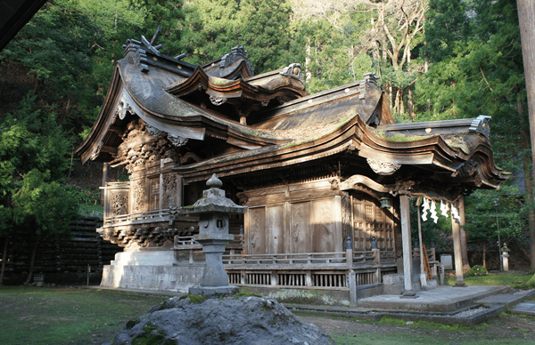
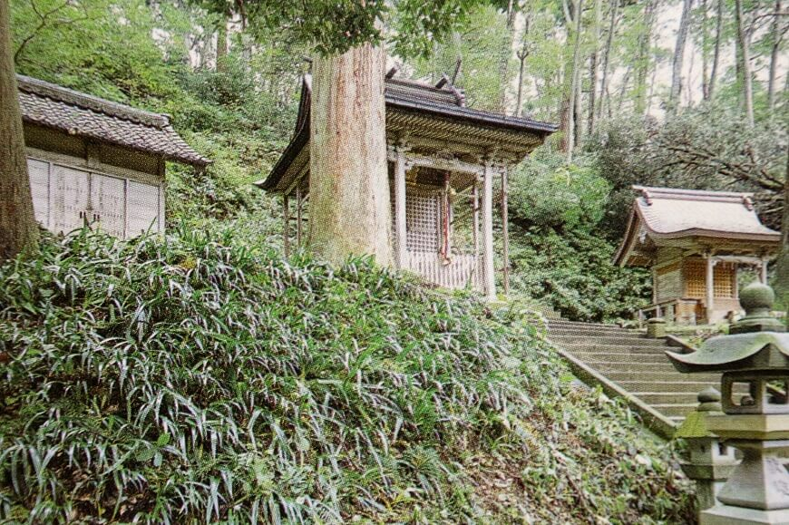

る ： 類を見ない 紙の神様 大瀧神社
一言でいうと？
日本で唯一「紙の神様」を祀る神社
山頂にある「奥の院」と、山のふもとに建つ「里宮」からなる神社です。
奥の院は「延喜式神名帳(えんぎしきじんみょうちょう)」(926年)という、平安時代に作られた神社の一覧表にも記録されており、日本で唯一の紙の神様、川上御前(かわかみごぜん)が祀られています。
川上御前の伝説とは？
紙の漉(す)き方を教えた美しい女性
■川上御前の伝説■
今から1500年前ほど前、越前五箇という地区を流れる岡太川の上流に、一人の美しい女性が現れ次のような言葉を人々に伝えました。
「この村里は、谷間で田畑が少なく暮らしにくい場所ですね。ですが、清らかな谷川と緑深い山々に恵まれていますから、紙を漉いて生計を立てれば暮らしは楽になるでしょう。」
そして女性は村人に紙の漉き方を教えました。
村人たちはたいそう感謝し女性に名前を尋ねると、「川上に住む者です」と答えたため、「川上御前(かわかみごぜん)」と呼んで崇めました。
川上御前は、万物を産み出し育てる水の神様とも言われ、子育ての神とも信仰されたそうです。
1500年前、紙すきの技を伝えた川上御前ですが、今でもこの今立地区では紙漉き産業が行われています。
特徴は？
複雑な形の屋根や彫刻(ちょうこく)
里宮の本殿と拝殿は、江戸時代後期の社殿建築の粋を集めて建てられたものです。
★屋根
檜皮葺(ひわだぶき)というヒノキの木の皮を使って作る屋根は、幾重にも波が寄せあうような複雑な形をしていて、おそらく日本一といわれています。
★彫刻
拝殿正面には獅子(しし)、龍、鳳凰(ほうおう)、草花の彫刻。側面と背面には中国の故事(こじ)という大昔の物語を題材にした丸彫りの彫刻があります。
昭和59年には、歴史的記録の確かさや建築の美しさから、国の重要文化財に指定されました。(名称は大瀧神社)
名前が2つ？
本殿が2つあるから
大瀧神社は本来は「岡太(おかもと)神社・大瀧(滝)神社」といいます。(岡本じゃないよ！)
名前が2つ並んでいるのは、奥の院は岡太神社、大瀧神社の本殿が並んで立っていますが、下の里宮は共有だからです。
▼里宮
▼奥の院(中央が大瀧神社、右が岡太神社)

里宮は近くで見ると本当に彫刻が美しく、人の手で作られたことに感服してしまします。奥の院は清純な気が流れていて、一種のパワースポットになっているそうです。複雑な形で、絵札にするのに苦労した一枚です。